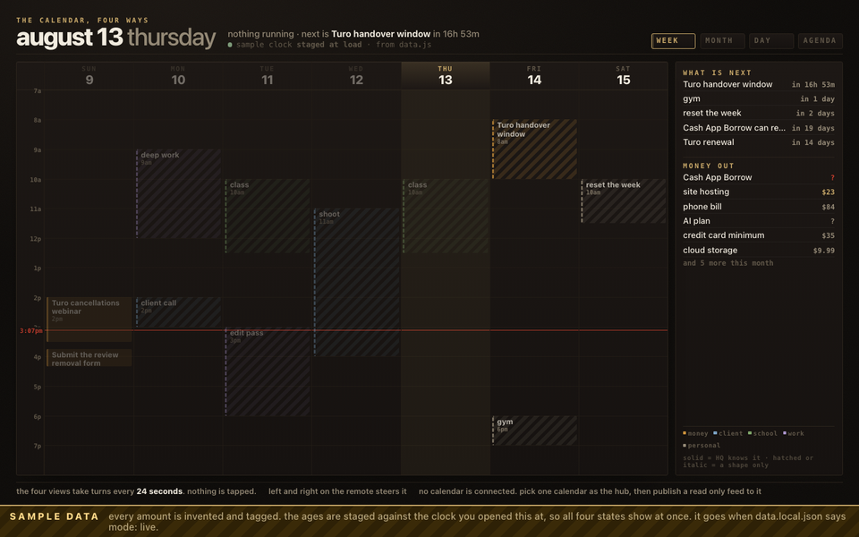
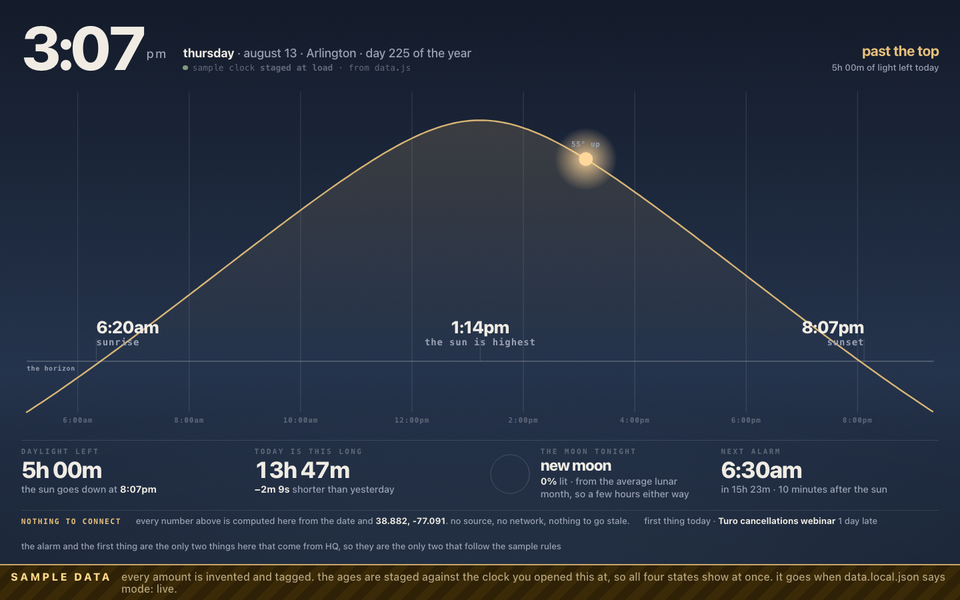
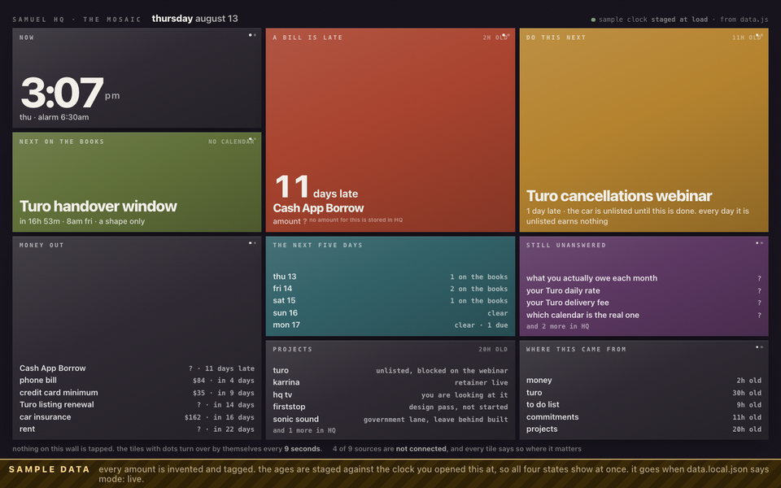
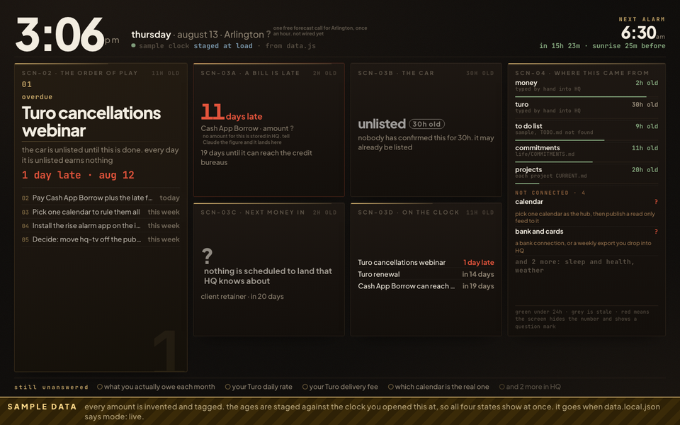
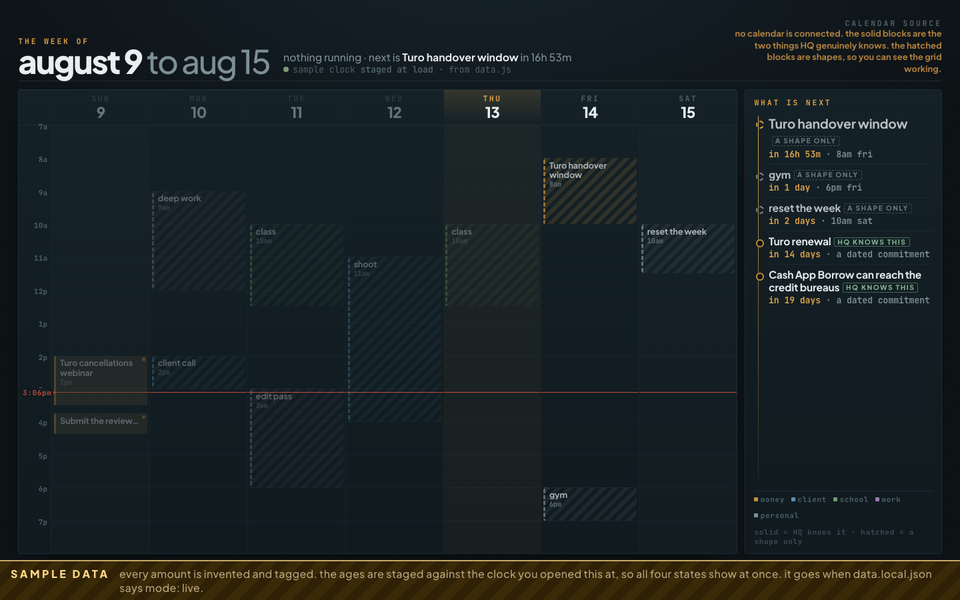
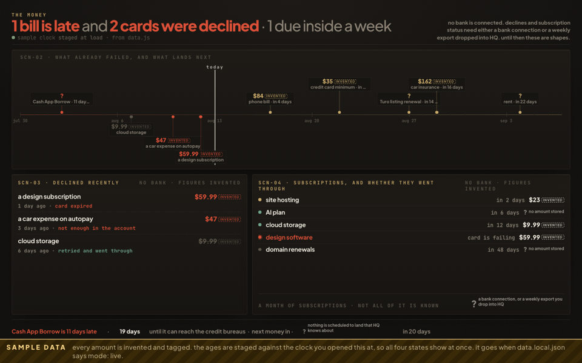
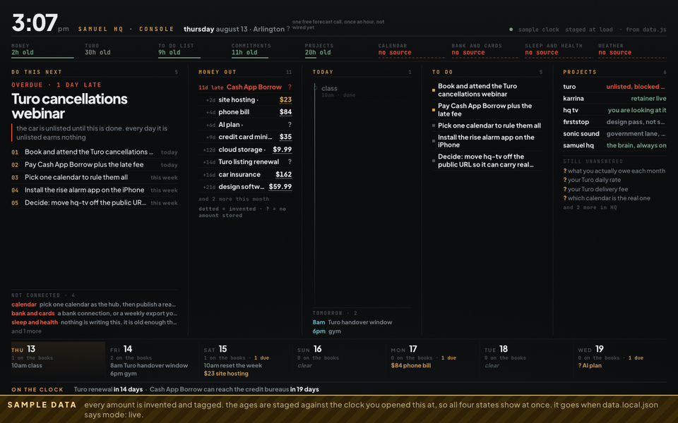
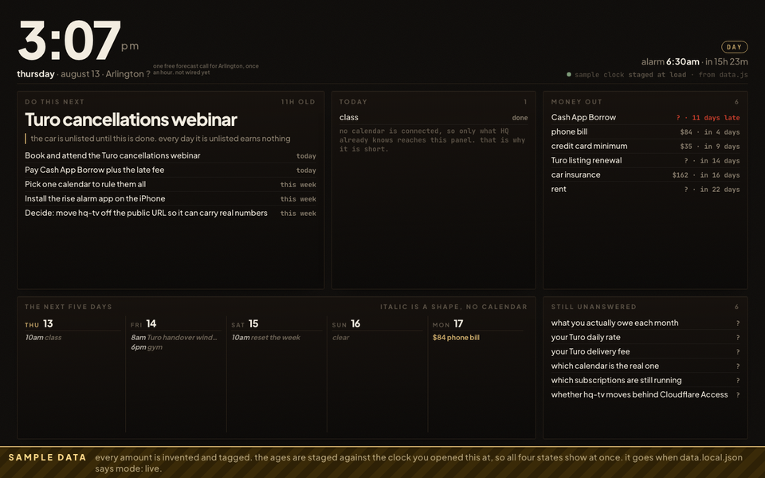
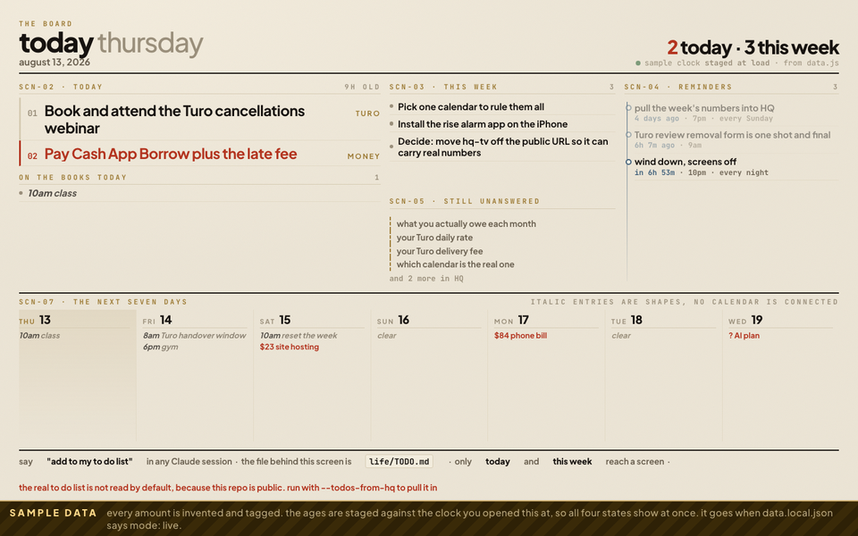
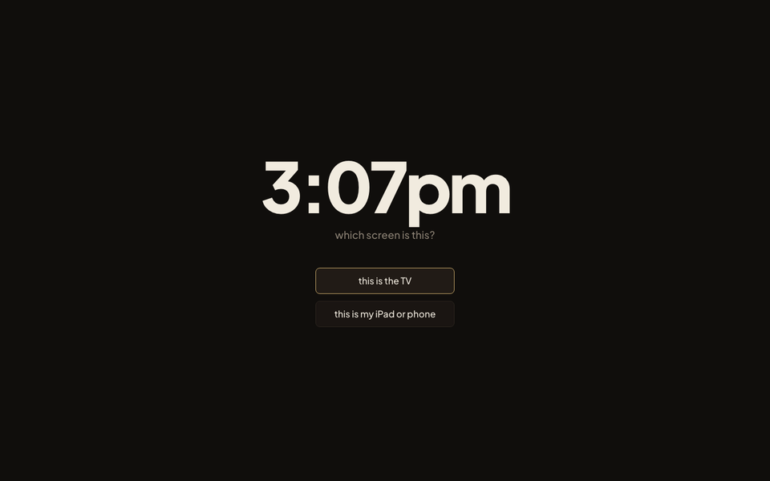

You said the TV was displaying things but not updating, and that a bill had said eight days late for more than a day. Every screen here computes that number from the due date at the moment it draws, so it moves on its own. Round 2 fixed what an outside reviewer found wrong with round 1, built the calendar view toggle you asked for on 2026-08-08, and added one screen nobody asked for. Your current dashboard is untouched and sits at the bottom for comparison.









